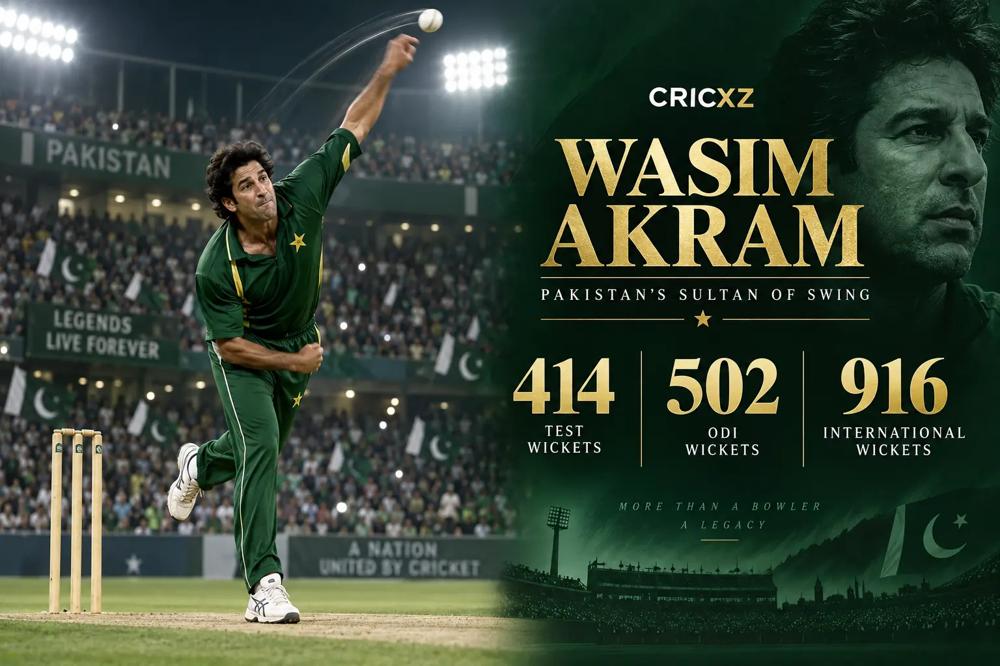
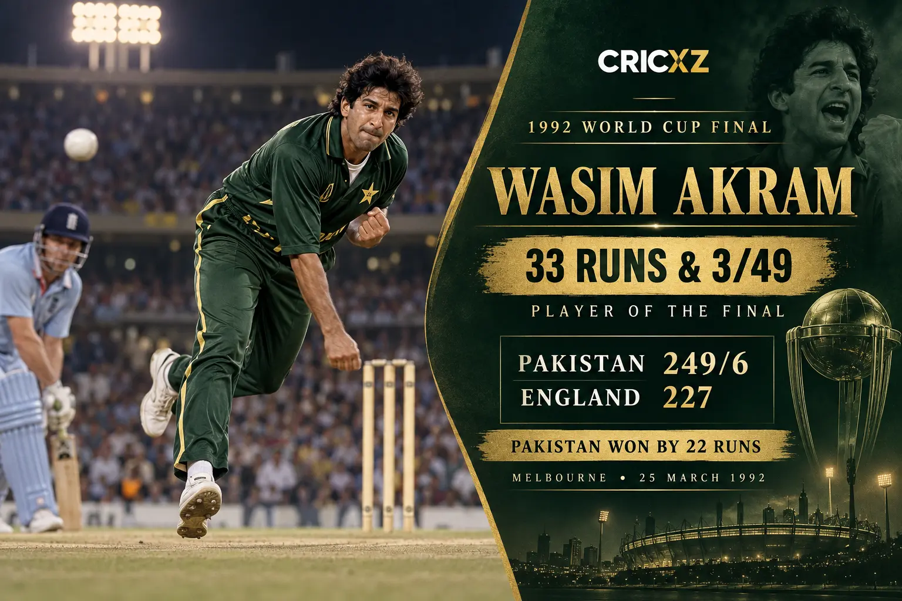

Test Bowling
- Matches
- 104
- Wickets
- 414
- Best innings
- 7/119
- Bowling average
- 23.62
- Five-wicket hauls
- 25
- Ten-wicket matches
- 5
- Runs
- 2,898

Wasim Akram claimed 916 international wickets, mastered conventional and reverse swing, and inspired Pakistan's victory in the 1992 World Cup final.
Career statistics are final.
Akram played his final international match in March 2003. The figures above were checked against ICC and Pakistan Cricket Board records.
Across an 18-year international career, Akram combined pace, late swing, reverse swing and tactical intelligence. His left-arm angle challenged batters in every condition, while his lower-order hitting made him a genuine match-changing all-round contributor.

At the Melbourne Cricket Ground on 25 March 1992, Akram struck 33 from 18 balls to lift Pakistan to 249/6, then took 3/49 as England were dismissed for 227. His consecutive dismissals of Allan Lamb and Chris Lewis transformed the chase, earning him Player of the Final as Pakistan won by 22 runs.
Akram could move the new ball, reverse the old ball and alter pace without losing control. He became the first bowler to reach 500 ODI wickets and remains one of the defining figures in the history of left-arm fast bowling.
25 January 1985 – 12 January 2002
Debuted against New Zealand at Auckland and made his final Test appearance against Bangladesh at Dhaka.
23 November 1984 – 4 March 2003
Debuted against New Zealand at Faisalabad and played his final ODI against Zimbabwe in the 2003 World Cup.
Test and ODI leadership
Led Pakistan across both major formats while remaining the attack's senior fast bowler.
Claimed 414 Test wickets and 502 ODI wickets.
Became the first bowler in men's ODIs to reach 500 wickets.
Finished with 25 five-wicket hauls and five ten-wicket matches.
Delivered the decisive spell against England in Melbourne.
Finished as the World Cup's leading wicket-taker.
Made an unbeaten double century against Zimbabwe in 1996.
Was inducted among the finest players in cricket history.
Played the defining role in Pakistan's first men's World Cup title.
Led the national side in Tests and one-day internationals.
Built a major tournament legacy across five World Cup campaigns.
CricXZ is an independent cricket publication and is not affiliated with the ICC, Pakistan Cricket Board or any team.
Read Muttiah Muralitharan's career records, explore Anil Kumble's statistics, or browse all CricXZ player profiles.